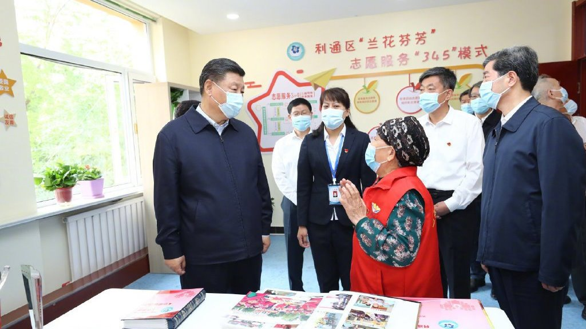
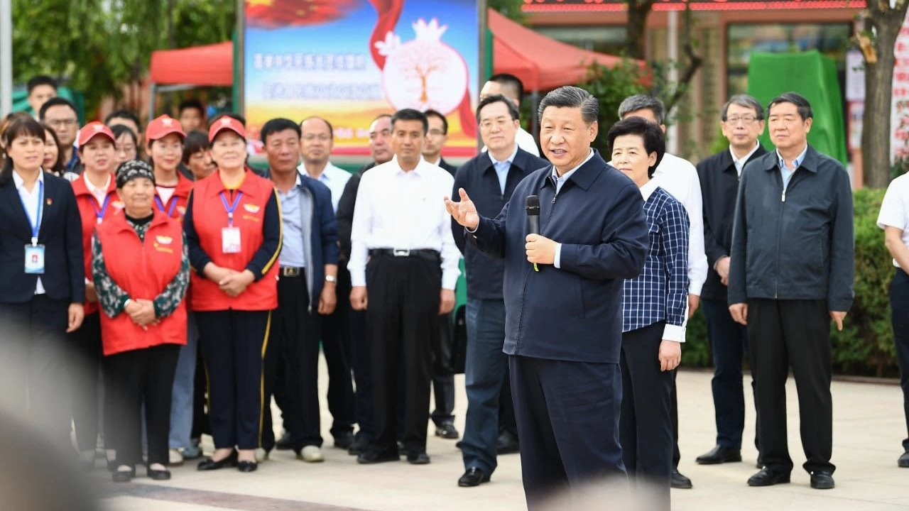
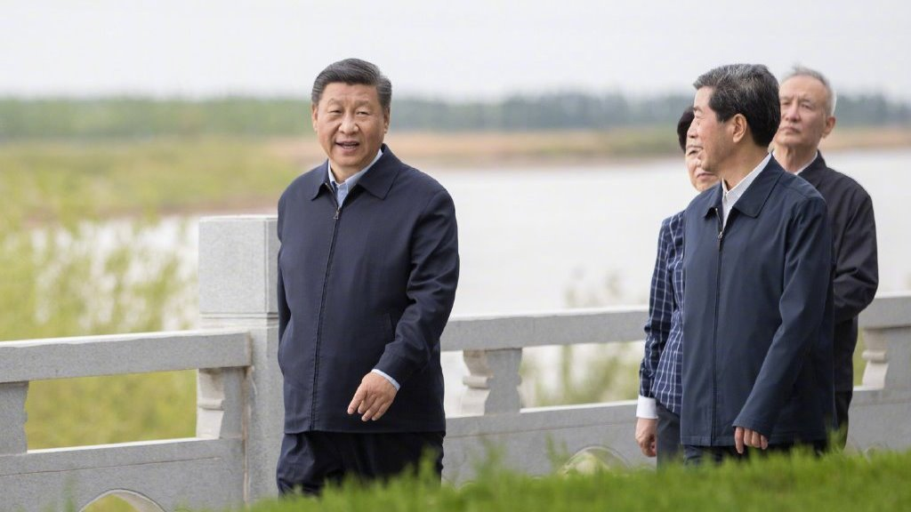
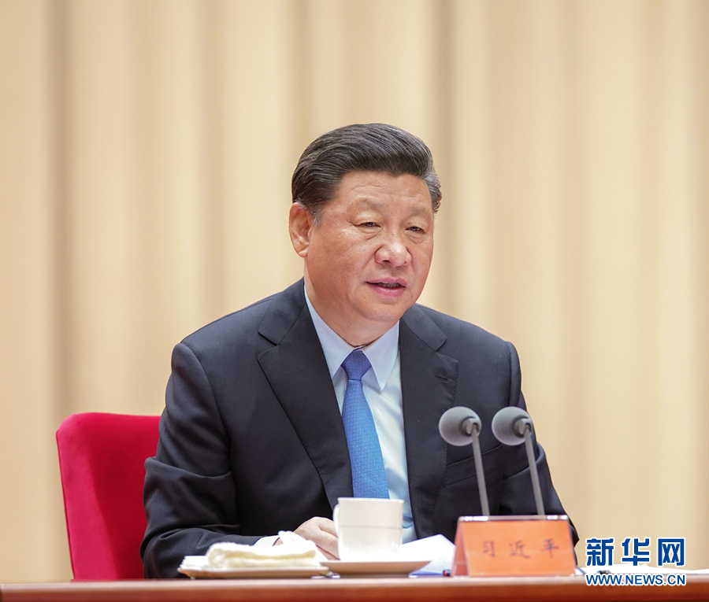
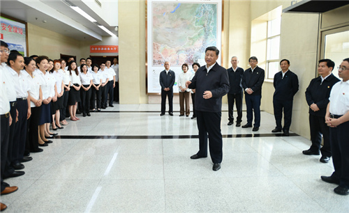

习近平赴宁夏考察调研
- 
- 
- 
主题教育
-

“不忘初心、牢记使命”主题教育工作会议
习近平：守初心担使命找差距抓落实 确保主题教育取得扎扎实实的成效
习近平在“不忘初心、牢记使命”主题教育工作会议上强调
守初心担使命找差距抓落实
确保主题教育取得扎扎实实的成效
李克强栗战书汪洋赵乐际韩正出席 王沪宁讲话 -

为了这一个主题 中央政治局常委7月以来密集调研
■ 新中国成立70年来，我国城乡面貌发生了翻天覆地的变化，老百姓生活芝麻开花节节高，充分证明我们走中国特色社会主义这条道路是对的。中国共产党之所以赢得人民群众拥护和支持，就因为我们党始终坚守为中国人民谋幸福、为中华民族谋复兴的初心和使命。我们党有9000多万党员和400多万个基层党组织，只要始终守初心、担使命，那就无坚不摧。
■ 开展“不忘初心、牢记使命”主题教育，归根结底就是中国共产党必须始终为中国人民谋幸福、为中华民族谋复兴。只有这样，我们党才能长期执政，国家才能长治久安，老百姓才能生活更加幸福。 -

哈尔滨工程大学：传承红色基因 铸就国家栋梁
“不忘初心、牢记使命”主题教育开展以来，哈尔滨工程大学认真学习贯彻习近平总书记重要讲话和重要指示批示精神，按照“守初心、担使命，找差距、抓落实”总要求，牢牢把握“为党育人、为国育才”使命定位，寻找初心，用忠诚报国传承“哈军工”红色基因，勇担使命，以建设一流大学履行立德树人职责，很好践行了“以祖国需要为第一需要，以国防需求为第一使命，以人民满意为第一标准”的“三个第一”价值追求。